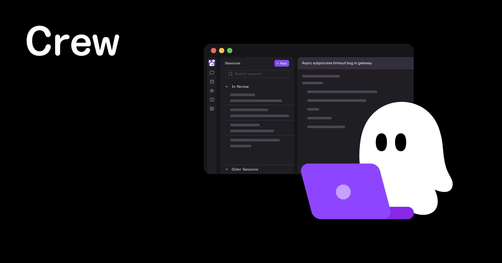

KiroCrew
A work computer for your AI agents that never clocks out: a task keeps running long after you close your laptop.
Type a task in plain English and walk away: KiroCrew keeps working on it after you close the window, so you come back to a finished answer instead of a stalled chat.

How does it work?
AI coding agents are powerful for a few minutes at a time, then they forget everything. Close the window and the whole conversation - and any half-finished work - is gone.
Running three tasks at once today means three separate chat windows, each starting from zero, with nothing shared between them.
You type a task into KiroCrew - from its dashboard, a command line, or even a chat app like Slack or Discord - and it keeps working on its own computer, online or not.
One independent developer just typed a made-up outage straight in: "Payment service latency spiked from 200ms to 4,500ms at 3:12 AM."
A task written in plain English, plus whatever files, past notes or tools you've connected.
Just that one sentence about the slowdown - the developer didn't set up anything extra beyond pointing it at his own project.
It runs multiple checks at once instead of one at a time, saves its progress as it goes, and sets up its own follow-up work.
- Runs several checks on the problem at the same time, instead of one after another
- Saves its progress constantly, so closing the laptop or losing the connection doesn't lose the work
- Once it has an answer, sets up its own automation to catch the same problem again
In the real test: 7 checks ran at once - git history, scheduled jobs, system resources and more - all inside one 33-second run.
A finished, reviewable answer waiting for you, plus new automation it built along the way.
- A specific answer, not a chat transcriptA root-cause guess: a misconfigured database connection setting, found in 33 seconds
- New automation left runningTwo new scheduled checks set up on their own, to catch the same problem next time
- A rough cost per jobAbout 2 to 4 cents for that one test, by the developer's own accounting
What changes for me?
Without it
- Close the chat window and the agent forgets everything - the project, the progress, the plan - and tomorrow you start over from scratch.
- One task, one chat window. Running three jobs at once means three separate conversations with nothing shared between them.
- A task that takes two hours means you sit there for two hours. There's no way to start something and check back later.
With it
- The work keeps running on its own computer in the background, even after you close the window; open it again from your phone, a web page, or apps like Slack, and pick up exactly where it left off.
- One crew, several agents: they can work on different jobs at the same time and share what they've learned.
- Start a job and walk away. In one independent developer's test, it investigated a mock outage, found a likely cause, and set up new monitoring for it, all in 33 seconds.
How hard is it to try?
Effort
- Watch what it actually does in an independent developer's walkthrough before installing anything.
- Install it with the one-line installer on its GitHub page, or download a ready-made version from the Releases page, then open the dashboard it starts on your own computer.
- Give it one small, real task in plain English and walk away; check back on the same dashboard, following the install guide for how to connect it to Slack or Discord if you want updates there.
What it takes on your computer
- Space on disk
- About 737 MB for the Mac installer (a universal .dmg), 273 MB for the Windows installer, and 259 to 372 MB for Linux (.deb, .rpm or AppImage, depending on chip and format) - current sizes from its GitHub Releases page (version 0.7.1). Building it yourself from source instead downloads about 80 MB for the program itself, plus Python and Node.js's own tools.
- Memory while it runs
- no data found. Neither the README nor the release notes give a memory number for running it.
- Runs on
- Mac, Windows or Linux. Building from source needs Python 3.12 or newer and Node.js 22 or newer; the ready-made installers don't need either. No graphics card needed - it calls out to an AI model rather than running one itself.
Paste this into Claude Code. It runs your safety scan first, then a 10-minute test.
/skillspector https://github.com/kirodotdev/KiroCrew If that scan passes: in a scratch folder, install KiroCrew with its one-line installer, open its dashboard, and give it one small real task in plain English (nothing tied to anything important). Show me what it reports back. 10 minutes max, then stop and report back in plain English.
Should I?
Great if you...
- You run AI coding agents and want a task to keep working after you close your laptop, with a result waiting when you get back
- You want several agents working on different jobs at once, reachable from your desktop, a web page, or apps like Slack or Discord
Skip it if...
- You just want a single AI chat for quick questions - this is a whole always-on workspace to set up and run, not a quick tool
- You're not comfortable being responsible for updates, access and cleanup yourself: it runs on your own computer, not as a service someone else maintains for you
- You need the AI decision-making itself to be open: by default it connects through a separate program (kiro-cli) that you install and log into on its own
Instead, you could look at
Is it safe?
- Security advisories: 0GitHub's advisory list, checked Sep 27
- Searches for CVEs, vulnerabilities, malware and scams0 results read, including the national CVE database: nothing found
- Are the stars earned?4.2K stars, 248 contributors, 7.7K commits
Watch out for
- A lot of open activity to sift through. 2,308 issues are open on GitHub right now, against 248 people who've contributed code - normal for a fast-growing project, but worth a look before you lean on it for something critical.
- You run it, so you maintain it. This isn't a service someone else keeps updated for you: updates, access and cleanup are on you, since it runs on your own computer.
- Its default brain is a separate program. By default it connects through
kiro-cli, a separate tool you install and log into on its own; check that tool's own terms and account before you rely on this for something sensitive. - Persistent memory can also persist mistakes. KiroCrew's own site says it turns corrections into lasting lessons - which cuts both ways: a bad pattern it learns will also stick around until someone catches and corrects it.
Who's using it, and for what?
Both real, hands-on tests we could verify come from the same independent reviewer, Sarvar Nadaf. That's a solid, detailed vote of confidence, but not yet a trend across different people.
Sarvar Nadaf, an independent developer writing for the AWS Builders community
Pointed KiroCrew at his own DevOps project and gave it a made-up P1 incident: a payment service's latency spiking from 200ms to 4,500ms.
It ran 7 checks in parallel, landed on a likely root cause (a misconfigured database connection setting) in 33 seconds, and set up 2 new monitoring jobs on its own.
I Spent a Day With Kiro Crew. Here's What It Actually Does., Aug 6Sarvar Nadaf, the same developer, in a follow-up write-up
Built a custom "Daily Standup Bot" inside KiroCrew from five small files (an agent, a skill, a dashboard page and a scheduled job) that reads the day's git commits and writes a standup note.
It read 11 real commits and produced a formatted standup note in about 9 seconds, added as a new page in KiroCrew's own dashboard.
How I Built a Kiro Crew App in 5 Minutes, Aug 18
Who's talking about it
Sources
- kirodotdev/KiroCrew on GitHub (README, releases), Sep 27
- KiroCrew homepage (kiro.dev/crew), Sep 27
- KiroCrew's GitHub Releases (version 0.7.1, file sizes), Sep 27
- Sarvar Nadaf: I Spent a Day With Kiro Crew. Here's What It Actually Does., Aug 6
- Sarvar Nadaf: How I Built a Kiro Crew App in 5 Minutes, Aug 18
- InfoWorld: AWS's Kiro Crew aims to turn AI coding agents into autonomous engineering teams, Aug 4
- Hacker News: Kiro Crew, Aug 4
- Hacker News: Introducing Kiro Crew, Aug 4
- Hacker News: Kiro Crew persistent workspace that self-improves, continues beyond one session, Sep 11
- KiroCrew's own website preview picture (used on this page), Sep 27
- Devin (devin.ai), named as an alternative, Sep 27